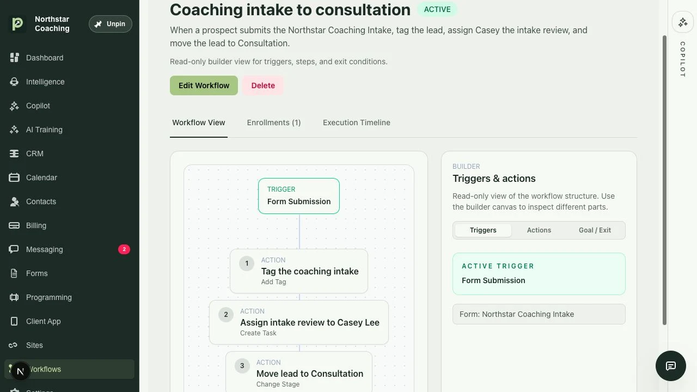
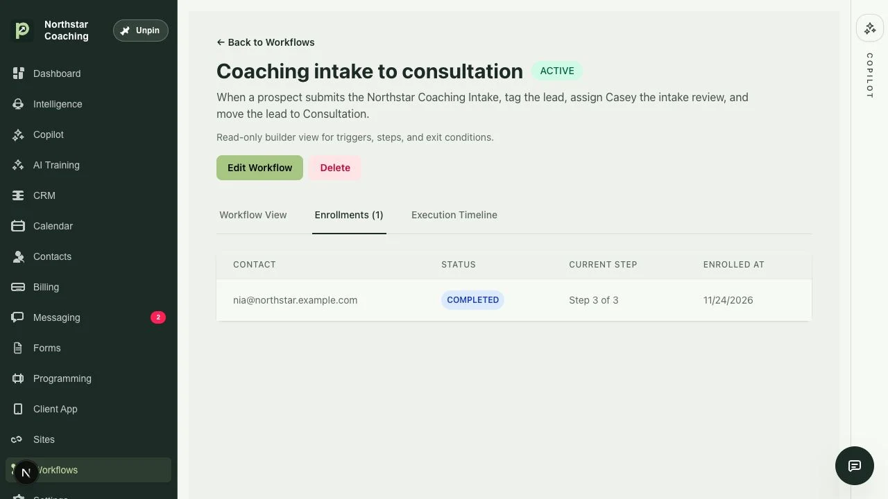
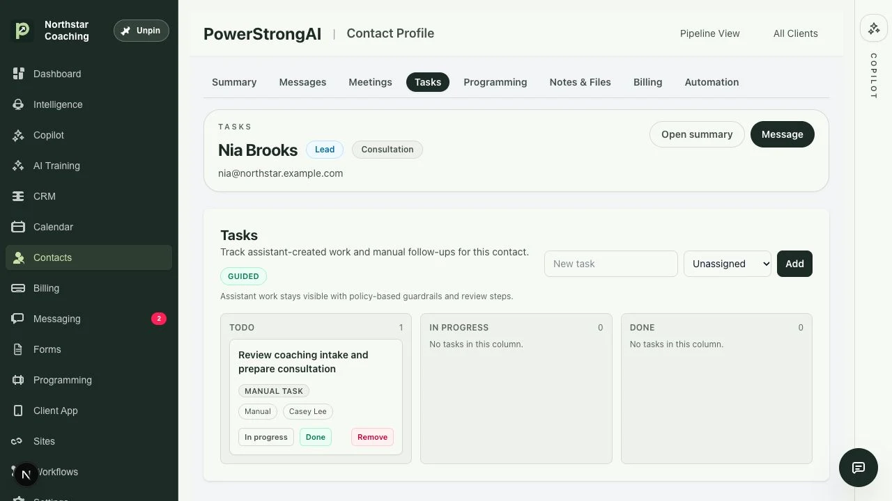

TENANCY & AI
Workspace context follows requests through role and entitlement guards into explicitly tenant-scoped services. Copilot tools operate within that same application context.
How I gathered requirements, built workflows, and verified the results in PowerStrongAI.
Work with my cofounder to understand how the business operates, agree on what to preserve, and define what needs to improve.
Map how people will use the product, including who does what, where handoffs happen, and how users handle exceptions.
Translate those workflows into system behavior and acceptance criteria for expected outcomes and failure paths.
Build the specified behavior across the interface and backend. Review the change against the acceptance criteria.
Check individual rules in isolation and verify that components work together across service and data boundaries.
Use Playwright to exercise complete user journeys in the browser and verify the outcomes users should see.
Walk through realistic scenarios with my cofounder in staging. Confirm the result fits how the team works and address feedback before release.
Deploy the reviewed change and run a smoke check in the live environment.
Worked example
From the coaching team’s requirements to a public intake that hands off to a named coach.
The cofounder discovery started with how leads arrive, who owns the next step, and where a coach looks when a handoff stalls. That shaped a reusable builder the team could configure for different workflows.
When a prospect submits the Northstar Coaching Intake, enroll the matched contact. Apply the Intake received tag, assign Casey Lee a consultation-prep task, and move the contact to Consultation. Each action runs immediately. I set Casey’s task assignment through the workflow API.




I used Playwright in the fictional Northstar workspace to submit Nia’s intake, check the confirmation, and verify the enrollment status and each completed action in the coach’s view.
await intake.playwright.getByRole('button', { name: 'Submit form' }).click();
await intake.playwright.getByRole('heading', { name: 'Thanks for submitting!' })
.waitFor({ state: 'visible' });
await workflow.playwright.getByRole('button', { name: 'Enrollments (1)' }).click();
const enrollment = workflow.playwright.getByRole('row')
.filter({ hasText: 'nia@northstar.example.com' });
await enrollment.getByRole('cell', { name: 'COMPLETED', exact: true })
.waitFor({ state: 'visible' });
await enrollment.getByRole('cell', { name: 'Step 3 of 3', exact: true })
.waitFor({ state: 'visible' });
await workflow.playwright.getByRole('button', { name: 'Execution Timeline' }).click();
const rows = workflow.playwright.getByRole('row').filter({ hasText: 'Nia Brooks' });
for (const step of [
'Tag the coaching intake',
'Assign intake review to Casey Lee',
'Move lead to Consultation',
]) {
await rows.filter({ hasText: step })
.getByRole('cell', { name: 'COMPLETED', exact: true })
.waitFor({ state: 'visible' });
}
if (await rows.count() !== 3) throw new Error('Expected three execution records');I reopened Nia’s CRM contact and confirmed the Consultation stage and Casey’s task persisted. The API also returned the saved tag, assignee, and exactly one matching task.
The cofounder walkthrough checks whether Casey can find the lead, see who owns the follow-up, and tell what needs to happen next.

The workflow ran in the fictional Northstar workspace. The walkthrough is published on GitHub Pages.
Workspace context follows requests through role and entitlement guards into explicitly tenant-scoped services. Copilot tools operate within that same application context.
Signed Stripe webhooks, duplicate-event checks, and purchase reconciliation paths connect provider events to workspace records and downstream workflows.
Templates, client assignments, and completed workouts have separate lifecycles. Replacement and synchronization rules account for session progress and locks.